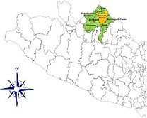
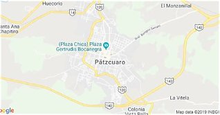
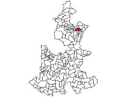
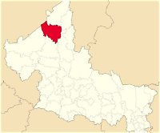
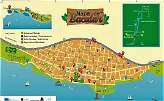
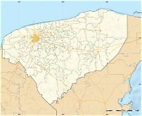
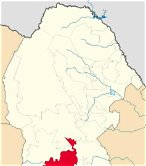

| Nombre | Descripción | Número de habitantes | Mapa |
|---|---|---|---|
| Tepoztlán, Morelos | Pueblo rodeado de cerros y famoso por la pirámide del Tepozteco y su ambiente místico. | 54,987 | |
| Taxco de Alarcón, Guerrero | Ciudad colonial de calles empinadas y casas blancas, conocida por su platería. | 105,586 |  |
| Pátzcuaro, Michoacán | Pueblo a orillas de un lago, con tradición purépecha, artesanías y la fiesta del Día de Muertos. | 98,382 |  |
| Cuetzalan del Progreso, Puebla | Pueblo en la sierra con cultura nahua, neblina, cascadas y mercado tradicional. | 49,864 |  |
| Real de Catorce, San Luis Potosí | Antiguo pueblo minero en el desierto, al que se entra por un túnel y es lugar de peregrinación. | 9,579 |  |
| Bacalar, Quintana Roo | Pueblo junto a una laguna de aguas de varios tonos de azul, con un fuerte del siglo XVIII. | 41,754 |  |
| Izamal, Yucatán | La "ciudad amarilla", con casas pintadas de ese color y un gran convento franciscano. | 28,555 |  |
| Parras de la Fuente, Coahuila | Pueblo del desierto con viñedos y bodegas, considerado la cuna de la vitivinicultura en América. | 44,472 |  |